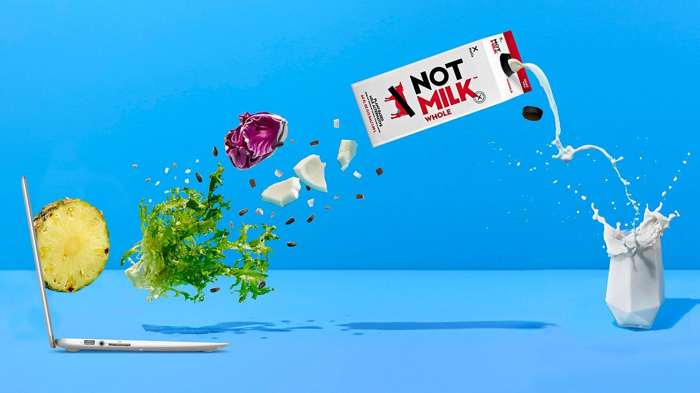

La producción de productos animales daña a nuestro planeta
Entonces, este es el tema: la producción mundial de alimentos, que se basa en la ganadería, usa más de un tercio de la superficie terrestre, y emite más CO2 que todo el transporte mundial en su conjunto. Sigue estándares ineficientes y abusivos, sin mencionar el mal uso del agua, la tierra y la energía. Es la causa principal de la deforestación, de los gases de efecto invernadero y, prácticamente, de toda la destrucción medioambiental conocida por las personas. Si queremos que nuestro planeta sobreviva, tenemos que cambiar la forma en la que se hace nuestra comida.
Sacar a los animales de la ecuación
Cuando descubrimos que al sacar a los animales de la producción de alimentos protegeríamos al planeta, no nos preguntamos el por qué. Dijimos, Why Not. La solución fue simple (para nuestros genios que aman la comida), crear un algoritmo que pueda aprender combinaciones infinitas de plantas para replicar los productos animales y que su sabor sea mucho mejor.
Cambiando el día a día

Hacemos un llamado a todos los fans de la comida y también a la industria alimentaria. Estamos aquí para hacer que las productos en base a plantas sean accesibles para todos, en cualquier lugar. Cambiemos el día a día con un bocado delicioso y a buen precio a la vez.